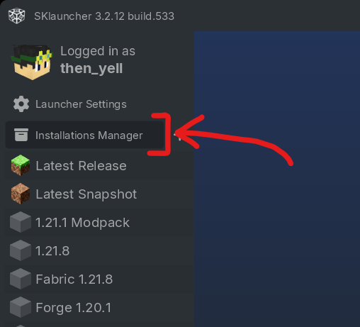
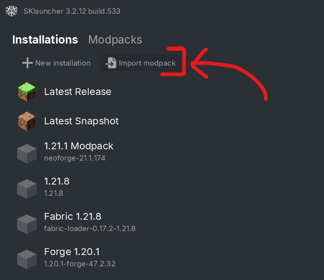
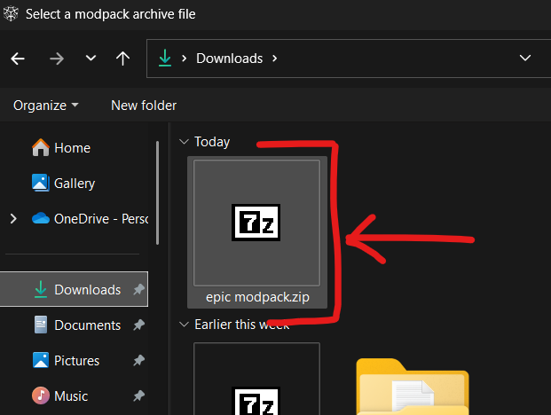
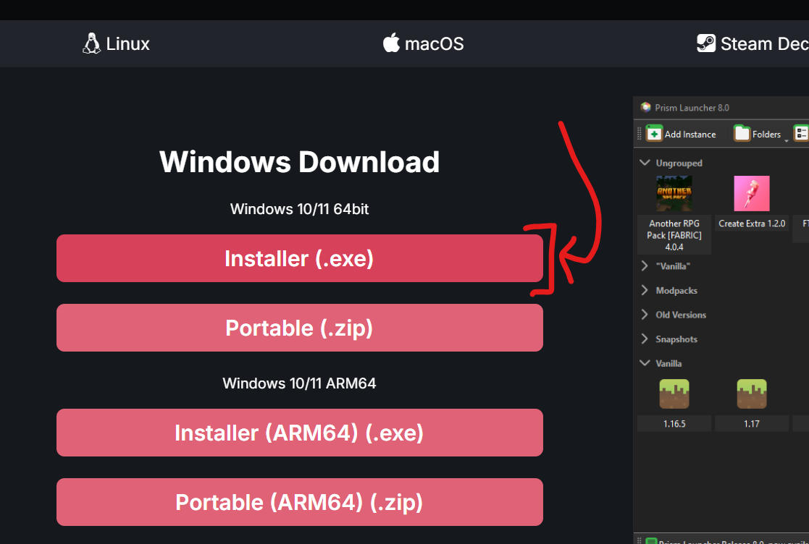
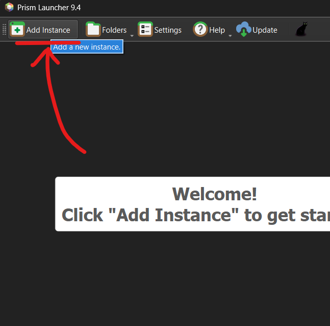
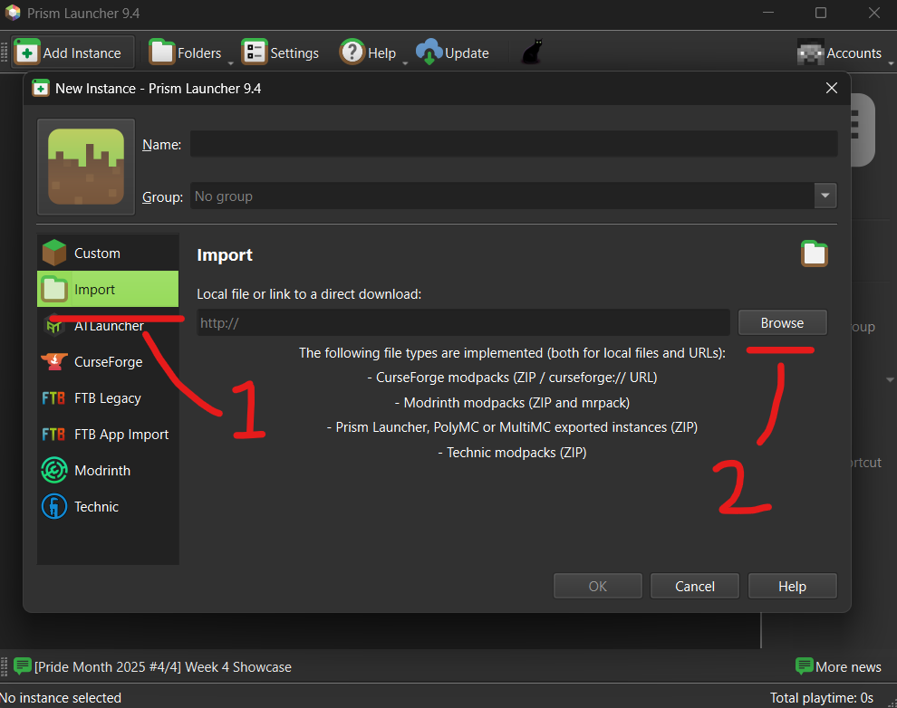
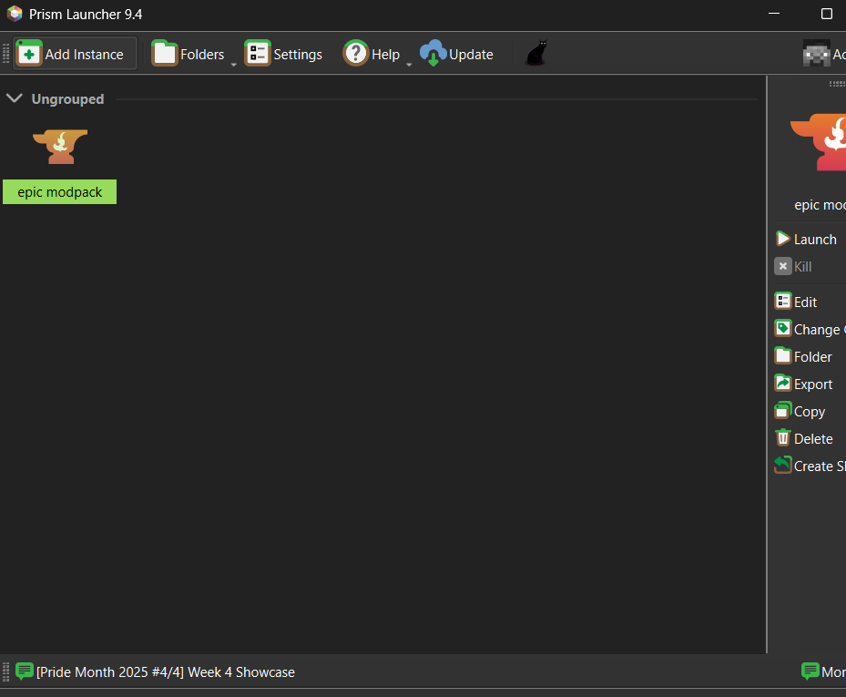

Pirated Minecraft - SKLauncher
easiest one so far
STEP 1: Download the modpack from the Google Drive link above.
STEP 2: Open SKLauncher.
STEP 3: Make a new installation.

STEP 4: Click "Import Modpack".

STEP 5: Click the .ZIP file of the modpack that I sent.

Then you're basically done, just click the modpack and play.

Legit Minecraft - Prism
minecraft launcher doesnt have its own feature that automatically makes another instance for a modpack so you will have to use Prism
STEP 1: Download the modpack from the Google Drive link above.
STEP 2: Download Prism Launcher - https://prismlauncher.org/

STEP 3: Open the .exe installer and go through the setup. Uncheck every component except for Prism and Desktop shortcut.
STEP 4: Select your languange (English). Skip the icons and Microsoft account stuff (you will connect your Minecraft account later).
STEP 5: Click "New Instance".

STEP 6: Click "Import from zip" and then Browse.

STEP 7: Click the .ZIP file of the modpack that I sent. Click OK and wait for it to download.
STEP 8: Now you can click on the modpack whenever you want to play it.
So click it. Since this is for legit Minecraft, you need to connect your Minecraft to this one.
That's where I leave you to do it, since I don't actually have a Minecraft account.
